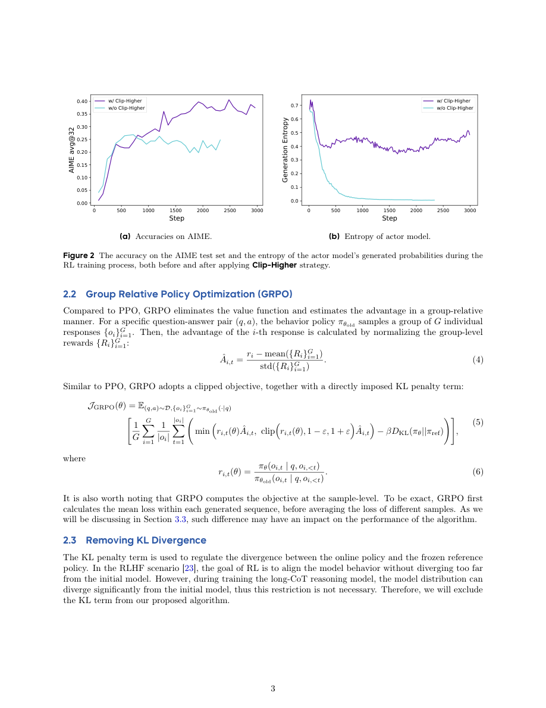
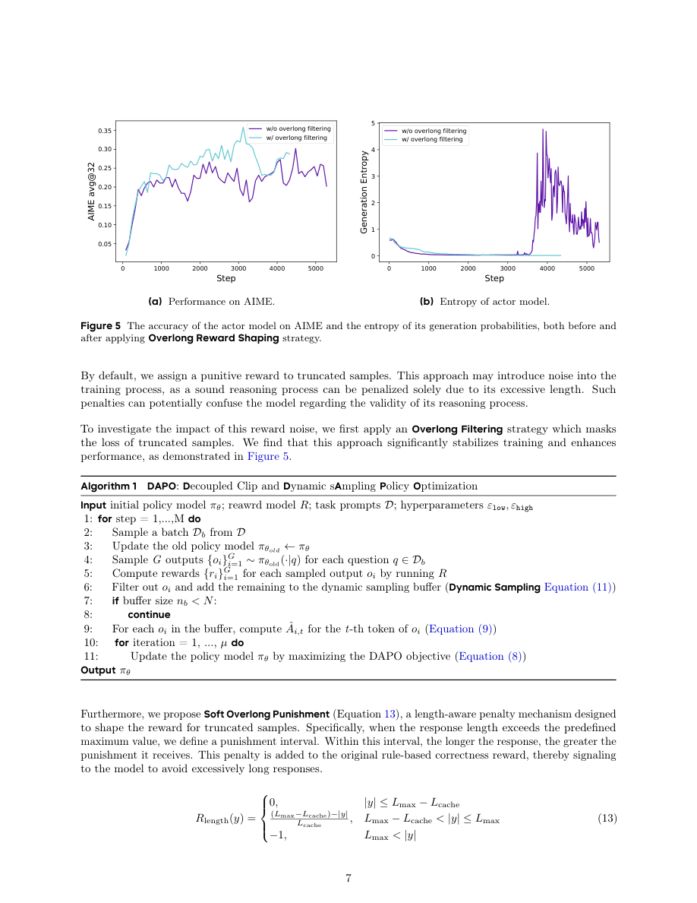
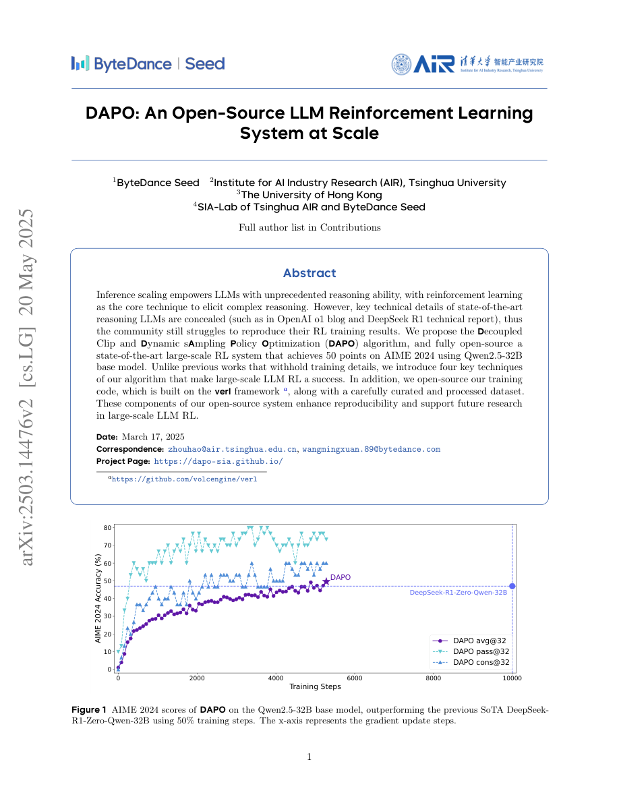
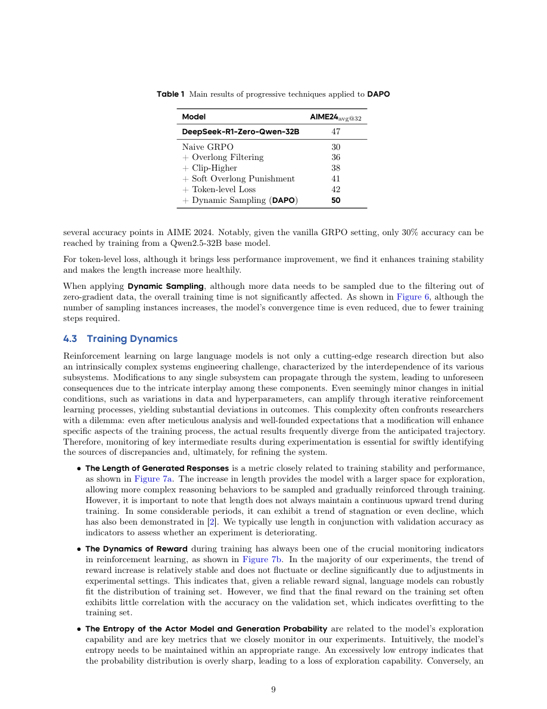
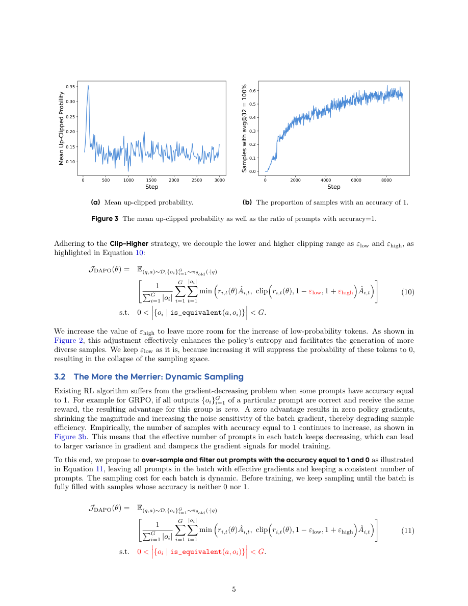
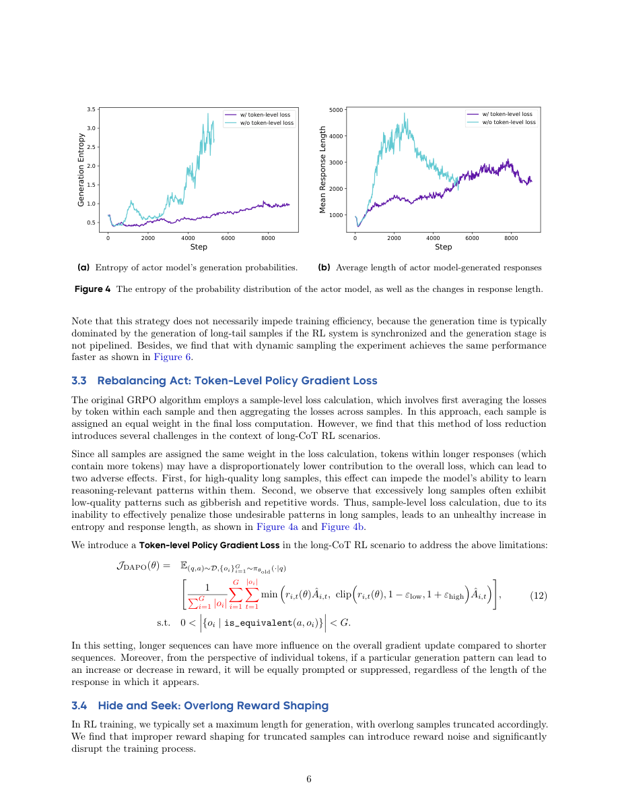
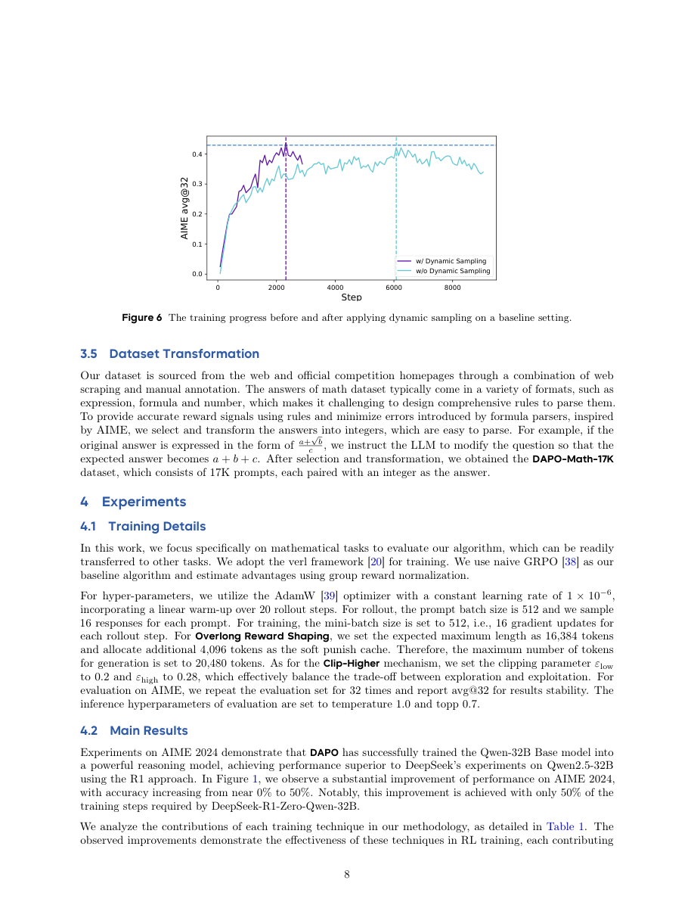
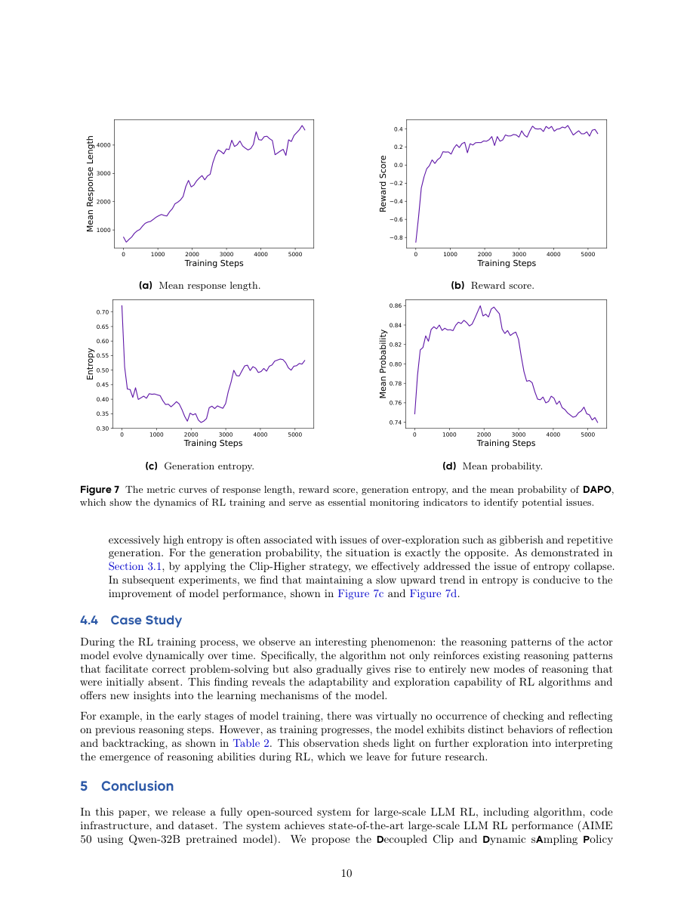
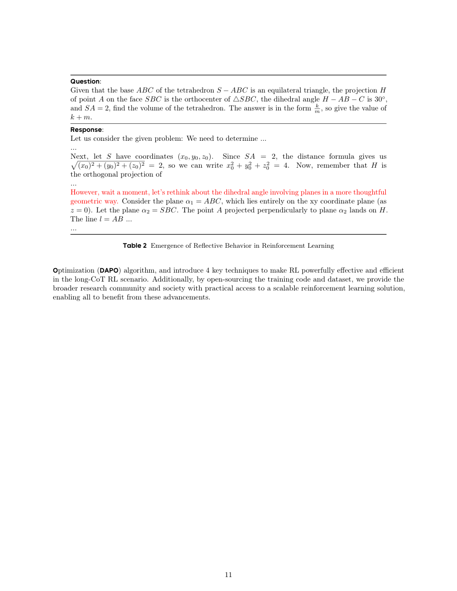
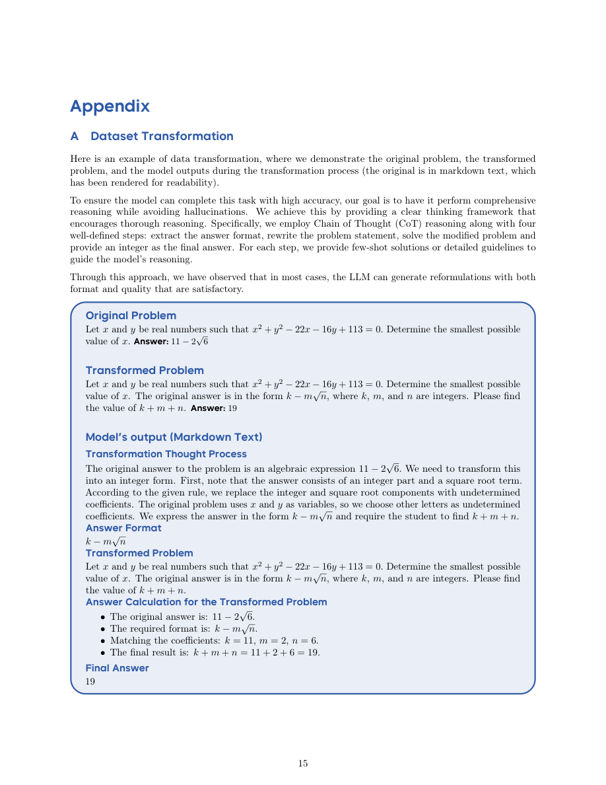

DAPO: An Open-Source LLM Reinforcement Learning System at Scale
DAPO 的价值在于把“R1-like 大规模 RL 到底怎么复现”拆成可运行配方：Decoupled Clip、Dynamic Sampling、Token-Level Policy Gradient Loss、Overlong Reward Shaping，再配合 DAPO-Math-17K、verl 代码和 Qwen2.5-32B，从 naive GRPO 的 AIME 30 提升到 DAPO 的 50。
1. 研究动机
DeepSeek-R1 证明了大规模 RL 能激励 reasoning，但关键训练细节仍然难以复现。DAPO 从工程复现实验出发：作者在 Qwen2.5-32B 上做 naive GRPO 只得到 AIME 30，显著低于 DeepSeek-R1-Zero-Qwen-32B 的 47，于是系统分析 entropy collapse、reward noise、training instability，并给出完全开源的算法、代码、数据、verifier 和模型。
不是新模型报告
DAPO 更像 RL recipe / system paper：目标是让社区能复现 R1-like large-scale LLM RL。
问题来自 long-CoT
long-CoT RL 会放大 entropy、长度、截断、token credit assignment 和 batch effective gradient 的问题。
开源闭环
项目页提供 GitHub、DAPO-Math-17K、DAPO-Qwen-32B、rule-based verifier 和 out-of-box verl training script。
2. 方法：DAPO 的四个关键组件
DAPO 建在 GRPO 之上，但移除 KL penalty，并把 clip、采样、loss reduction 和 overlong reward 都改成适合 long-CoT RL 的版本。它的完整 objective 用 token-level reduction，且只保留一组采样中既有正确又有错误的 prompt，让每个训练 prompt 都有非零相对 advantage。
DAPO objective
对 question-answer pair $(q,a)$，旧策略采样 $G$ 个输出 $\{o_i\}_{i=1}^{G}$，优势由组内 reward 标准化得到：
$$\hat A_{i,t}=\frac{R_i-\mathrm{mean}(\{R_i\}_{i=1}^{G})}{\mathrm{std}(\{R_i\}_{i=1}^{G})},\qquad r_{i,t}(\theta)=\frac{\pi_\theta(o_{i,t}|q,o_{i,| 组件 | 解决的问题 | 设计 | 论文证据 |
|---|---|---|---|
| Clip-Higher | 默认上界 clipping 限制低概率 exploration token 上升，导致 entropy collapse。 | 解耦 $\epsilon_{\mathrm{low}}$ 和 $\epsilon_{\mathrm{high}}$；训练中用 0.2 / 0.28。 | Figure 2：AIME accuracy 与 generation entropy 均提升。 |
| Dynamic Sampling | 一组样本全对或全错时 advantage 为零，batch effective prompts 下降。 | 过采样并过滤 accuracy=0 或 accuracy=1 的 prompt，直到 buffer 填满有效样本。 | Figure 6：达到同等性能所需训练步数更少。 |
| Token-Level Policy Gradient Loss | GRPO sample-level averaging 让长回答每个 token 权重变小，难以学习/惩罚长 CoT 模式。 | 用所有 token 总数归一化，让长样本按 token 贡献梯度。 | Figure 4：entropy 和 response length 变得更健康。 |
| Overlong Reward Shaping | 直接惩罚被截断样本会把“推理正确但太长”的样本误判为差，制造 reward noise。 | 先用 overlong filtering mask loss，再提出 soft overlong punishment。 | Figure 5：训练更稳定，AIME 更高。 |
Rule reward 与 length reward
数学题最终答案被转换成整数后，reward 可以用字符串归一化和等价判断实现：
$$R(\hat y,y)=\begin{cases}1,&\mathrm{is\_equivalent}(\hat y,y),\\-1,&\mathrm{otherwise}.\end{cases}$$Soft Overlong Punishment 用 length-aware penalty 避免硬截断噪声：
$$R_{\mathrm{length}}(y)=\begin{cases}0,&|y|\le L_{\max}-L_{\mathrm{cache}},\\\frac{(L_{\max}-L_{\mathrm{cache}})-|y|}{L_{\mathrm{cache}}},&L_{\max}-L_{\mathrm{cache}}<|y|\le L_{\max},\\-1,&L_{\max}<|y|.\end{cases}$$

3. 实验设计与复现细节
论文只在数学任务上验证 DAPO，但给出的复现细节相当具体。训练基座是 Qwen2.5-32B，框架是 verl，数据是 DAPO-Math-17K，评估用 AIME 2024 avg@32。
训练超参
- Optimizer：AdamW，constant learning rate $1\times10^{-6}$。
- Warm-up：20 rollout steps。
- Rollout：prompt batch size 512，每个 prompt 采样 16 responses。
- Training：mini-batch size 512，每个 rollout step 做 16 gradient updates。
- Length：expected max 16,384，soft punish cache 4,096，generation max 20,480。
- Clip-Higher：$\epsilon_{\mathrm{low}}=0.2$，$\epsilon_{\mathrm{high}}=0.28$。
- Evaluation：AIME 2024 重复 32 次，temperature 1.0，top-p 0.7，报告 avg@32。
数据转换
数学答案原本可能是表达式、公式或数字，解析规则容易出错。DAPO 参考 AIME，把答案转换成整数，例如把 $a+\sqrt{b}/c$ 形式的问题改写成求 $a+b+c$，最终得到 DAPO-Math-17K。
| 模型/技巧 | AIME24 avg@32 | 增量读法 |
|---|---|---|
| DeepSeek-R1-Zero-Qwen-32B | 47 | 前一个公开 SoTA 参考。 |
| Naive GRPO | 30 | 复现失败的起点，说明论文细节不足会导致大幅掉点。 |
| + Overlong Filtering | 36 | 减少截断样本 reward noise。 |
| + Clip-Higher | 38 | 缓解 entropy collapse，保留探索。 |
| + Soft Overlong Punishment | 41 | 用软惩罚替代硬惩罚。 |
| + Token-level Loss | 42 | 提升稳定性，让长度增长更健康。 |
| + Dynamic Sampling (DAPO) | 50 | 过滤零梯度 prompt，完整 DAPO 达到最佳。 |
复刻 Table 1。DAPO 的核心叙事是每个工程技巧都贡献若干点，合起来超过 R1-Zero-Qwen-32B 且训练步数约少 50%。
4. 结果与训练动态
DAPO 最重要的结果是可复现性：同样从 Qwen2.5-32B base 出发，naive GRPO 只有 30，而完整 DAPO 到 50。论文也提醒，大规模 LLM RL 是复杂系统工程，必须持续监控 response length、reward、entropy 和 mean generation probability。


训练动态指标
Response length 提供探索空间但不能无节制上升；training reward 可能与 validation accuracy 脱钩，反映 overfitting；entropy 太低丧失探索，太高可能变成 gibberish/repetition。
反思行为涌现
Case study 显示训练后期模型开始出现 checking、reflection、backtracking。DAPO 把这个现象解释为 RL 不仅强化已有推理模式，也可能诱发新 reasoning modes。
5. Figure / Table 导航
本页保留 10 张完整页截图，覆盖算法组件、主结果、训练动态、反思 case 和数据转换。






6. 复现清单
DAPO 是三篇里复现资产最完整的一篇。项目页说明其开放 algorithm details、dataset、verifiers、model weights 和 infrastructures，并给出基于 verl 的训练脚本。
官方资产
- GitHub：
BytedTsinghua-SIA/DAPO。 - Dataset：
DAPO-Math-17k。 - Model：
DAPO-Qwen-32B。 - Framework：verl；论文和项目页都引用
volcengine/verl。 - Verifier：项目页链接到基于 string normalization / matching 的 math verifier。
- Script：项目页给出
run_dapo_qwen2.5_32b.shout-of-box 训练脚本。
复现风险
- 项目页补充开放实验使用 128 H20 GPUs；个人环境难以完整复现 scale。
- 论文只验证数学任务，迁移到 coding、tool-use、agent 任务时 verifier 和数据转换要重做。
- Dynamic Sampling 过滤全对/全错 prompt 会改变训练分布，需要记录过滤率和采样成本。
- DAPO-Math-17K 的整数化 transformation 可能改变题目风格，需要审计是否引入偏差。
7. Reviewer Critique
DAPO 的强项是透明和可运行，弱项是论文篇幅短、实验域窄。它不是全面证明 DAPO 对所有 RLVR 都最优，而是给出了一个能把 Qwen2.5-32B 在 AIME 上做起来的实用 recipe。
优点
- 直面复现差距：naive GRPO 只有 30，而不是假设 GRPO 自然有效。
- 四个技巧都对应具体 failure mode，并有曲线或 ablation 支撑。
- 开源代码、数据、模型、verifier、训练脚本，工程可复查性强。
- 强调训练动态监控，符合大规模 RL 系统实际经验。
不足
- 主实验几乎只围绕 AIME 数学任务，缺少 coding、science、agent、tool-use 的跨域验证。
- 缺少完整成本表和吞吐/显存/失败率分析，系统论文维度仍偏薄。
- Clip-Higher、Dynamic Sampling 等超参敏感性没有系统 sweep。
- 整数化数据转换提升 verifier 可靠性，但也可能让任务分布偏向 AIME-style answers。
我会补的实验
做跨任务验证、group size/clip range/filter ratio ablation、wall-clock/GPU hour 成本曲线、不同 base model 的 scaling，以及把 Dynamic Sampling 过滤率作为训练监控指标公开。
8. 对研究的启发
RLVR 工程
不要只看 final reward；response length、entropy、mean probability 和 valid-gradient prompt ratio 是 RLVR 的早期健康指标。
Verifier 设计
把答案空间转成容易判定的形式比写复杂 parser 更稳。对 agent/tool 任务，也应设计低噪声 verifier。
Replay / Diversity
Clip-Higher 和 Dynamic Sampling 本质都在保护探索多样性；这对 questioner-solver、自进化和 replay buffer 去同质化很有借鉴意义。